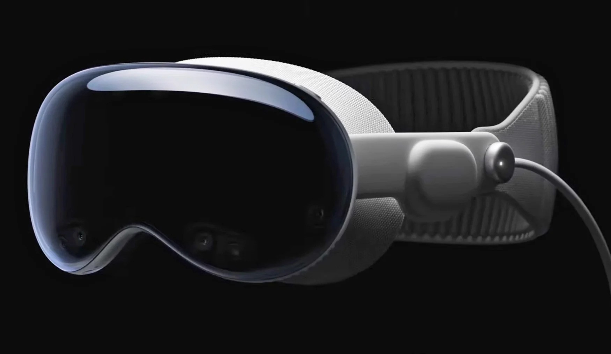
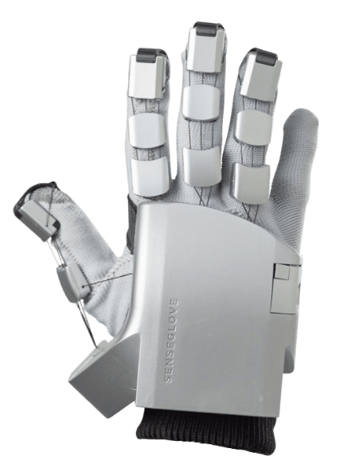

Virtual Reality has come a long way since its early concepts with the Powerglove. With new releases from big names like Apple with the Vision Pro, we are seeing VR start to cross the threshold of being a consumer product.
We have seen a lot of development in this field. With big projects like bHaptic's haptic suits, or the now modernized powerglove, SenseGlove's Nova, we are witnessing the push to further commercialize VR.
The more refined this tech becomes, the more you can start to imagine a world where the differences between physical and virtual reality lessen. Exciting, or eerie?

